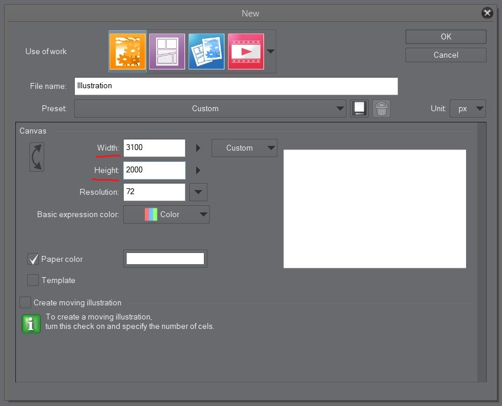
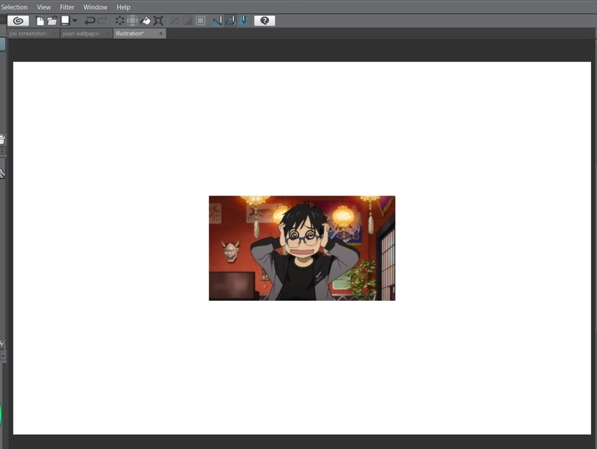
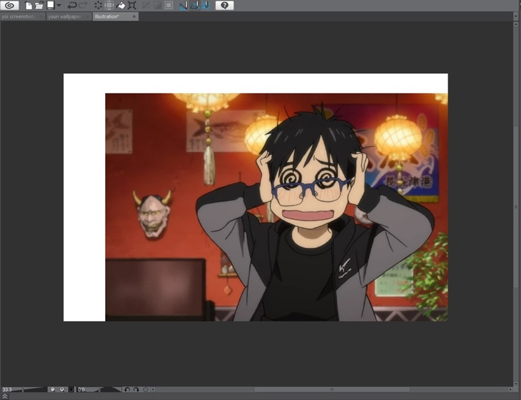
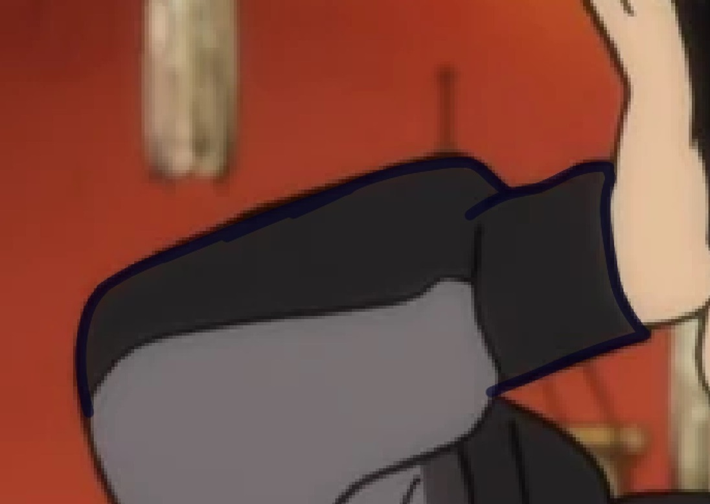
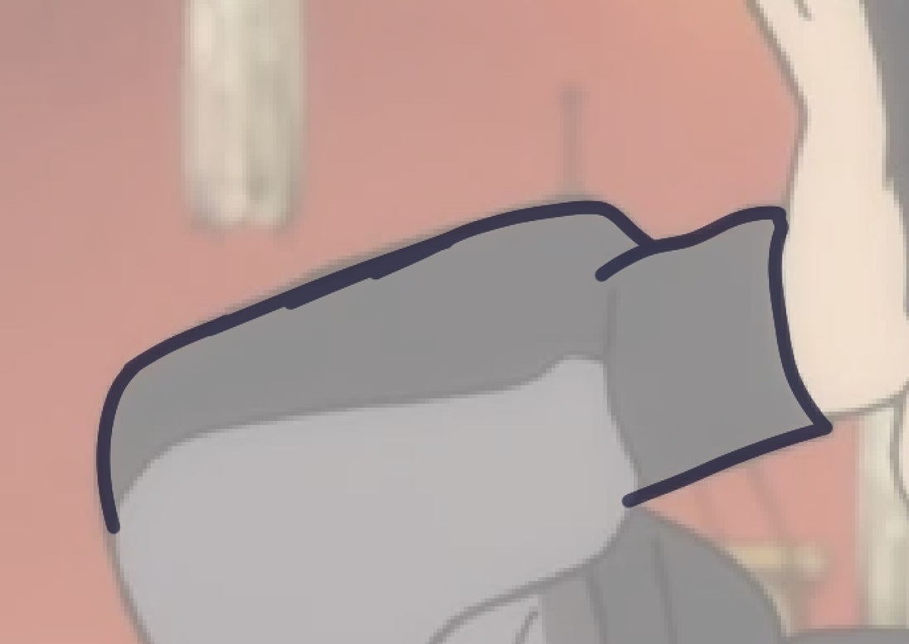
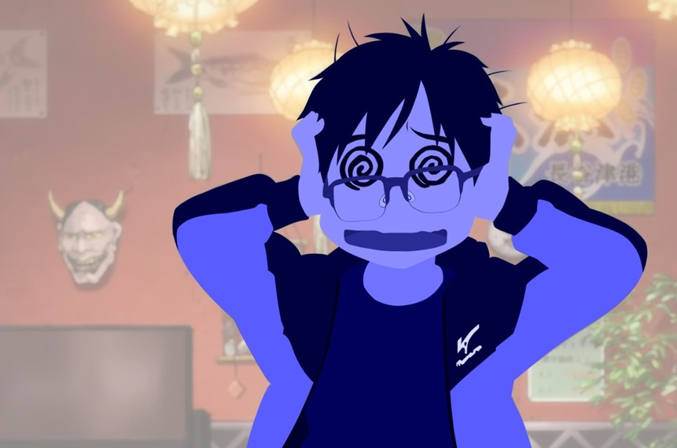
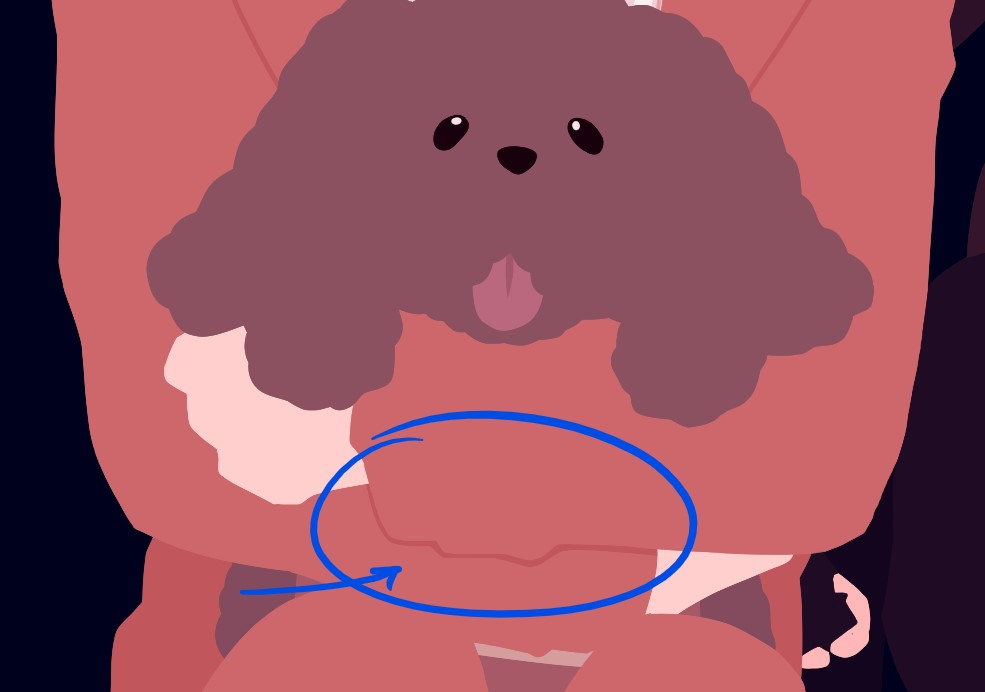

Disclaimer: this version of Clip Studio Paint is the only drawing program I've ever used on anybody's computer, so I don't know how other programs are. If you don't know something, there are near endless resources on the internet. Good luck and have fun in Yaptown.
Start a new canvas
If you're not using those funky vector things that always give you a clear image, make sure your canvas is big enough so the pixels are barely detectable.

At minimum, you could probably get away with using a canvas that's 1000x1500? Don't quote me on it. Or you could go the safe route and use a canvas that is 1920x1080.
Note: Ignore the numbers in the picture - I use the 'full' option on Windows for my wallpapers, and that allows me not to care about the exact aspect ratio, that's why there's so much 'um maybe's here.
Nab your screenshot from somewhere and copy-paste it to your empty canvas.
I'll be using this relatively high-quality one that could probably be a wallpaper on its own, but I decided it's my victim:

Itty bitty. Let's size up the image.

Note: The screenshots themselves do not need to be in a high resolution. Unless the character's dark clothes/features/whatever start bleeding into the background or some other dark thing, then you might need a more high quality image. There just have to be enough clues for you to correctly interpret the shapes of the characters.
Look at this image:
Even if I can count the individual pixels, there's still enough information to faithfully draw over it.
If your copied picture isn't already on its own layer, make sure that it is. From there, use your program's scaling tool on the image or its layer until the character is the size and position you want them in. If needed, change the size of the canvas.
IF your image is stretching too wide or narrow, your program's built-in scale tool should have a toggle somewhere to keep your selection's original ratio. (On Clip Studio Paint, the scale tool's settings should appear by your toolbar when you press Ctrl+T. From there, there's a box you can check that says 'Keep ratio of original image'.)
Layer setup
Now that you have your screenshot at the ready, now it's time to make it transparent by selecting the picture's layer and adjusting the layer's opacity. 30-69% is usually where I put it. I find that doing this helps me see pen strokes, and feels less visually noisy.
If distinguishing your pen strokes from the image becomes an issue, you can always adjust the opacity.

Figure 1: Dark transparent lines on dark clothes, 100% image opacity

Figure 2: Dark transparent lines on dark clothes, ~50% image opacity
Next, create a layer folder place it above your screenshot layer. This is where all your drawing layers are going to go. Set the opacity of the folder to about 60% or whatever percentage allows you to see both the screenshot and your pen strokes. I wouldn't recommend keeping the individual drawing layers at anything other than 100% opacity, BUT! There are uses for it.
Why only change the opacity of the folder?
Figure 1: Two drawing layers set at 60% opacity individually
Figure 2: Two layers at 100% opacity inside a folder set at 60% opacity
The folder is just a unit for all the layers inside it and acts as all its layers mashed into one. Can't draw on it, though.
Layer naming (Optional step)
Okay. I assume you know how layers work. Above is synonymous with front, below is synonymous with behind, etc.
You might want to name your layers descriptively and concisely. You'll have your own naming conventions, but I do something like 'front/back/backback _____', where a layer is named 'front' or 'back' depending on whether it's in front of another layer of the same attribute.
Take the layer name, 'front skin', for example. It's the name of the frontmost skin layer and belongs above the other skin layers, but doesn't necessarily have to belong above a layer named 'back clothes'.
Actually drawing over the thing
For these steps I like to have:
- Pens with no pen pressure
- A pen with pen pressure
- An airbrush because I like drawing blush
- Fill tool because I'm lazy efficent
- Erasers with the same properties as my pens
Outline the part you want to colour first. I like doing the head first and prefer using a pen without pen pressure so I don't have to worry about line width mid-stroke.
As for choosing colours (for this step in the process, at least), I use filler colours. These are hastily-chosen and very loosely match the character's values (as in 'brightness', not principles) in the original screenshot.
I do this for reasons related to contrast - I want to know where my pen stroke ends and the screenshot colours begin. Brightly saturated or complementary colours are nice for this.
Draw along the lineart (not within it), it doesn't have to be perfect. Your aim is to capture the essence of your screenshot so you can play with it.
Remember that every layer is basically just colourful blocks and blobs that are either in front of or behind another blob.
Now, whether a layer belongs in front of another one at all comes down to your better judgement. And by better judgement, I mean 'how much delicate erasing it would take for this to look right'. For example:

I haven't traced his jacket yet. I have fully traced and finished his head. His hands are on the same layer. I have no desire to change it. I've captured him well. In this case, I'd put his jacket beneath this front skin layer because the only erasing I would have to do is a non-delicate procedure on his wrists, as opposed to carefully ruin his beautiful face.
Note: Delicate erasing is the only reason I can think of to change layer opacity as opposed to folder opacity.
You will end up having to do delicate erasing every once in a while, but that's just drawing. Good layer choices just lessen the frequency.
Once traced, fill it in. You can add fine details later. Repeat process until character is a colourful blob.

Hope that's enough drawing stuff. On to colours.
Colouring
Shapes
Since your drawing layers offer no lineart, your colours are going to be what distinguish shapes in your drawing. All in the name of understanding what you're seeing.
Like separating the neck and the head by making the neck a slightly darker colour than the head so they don't bleed into each other. Plus it gives an illusion of depth.
However, if you feel there's not enough information in your shapes, then add some detail on a new layer. How much you want your blobs to meld together is up to you. I like a decent mix of detail and blobbiness.

Note: Even though it's cropped, you can see that I used lines to show this character's coat lapels. It looks better and I could hardly tell it was a coat otherwise.
I like to use a clip layer (Mask layer? Clip mask? Who cares, same concept) because it's just Alpha Lock but on a separate layer.
Speaking of layers, turns out they're important for this, too. At least for me.
Layers
My general philosphy is this: 'If I'm using a new colour, it's time to add a new layer'. Even if the characters I'm colouring over don't have very complex features.
The reason for this philosophy is because when I'm changing the filler colours to the final colours, I just want to use Alpha Lock and change the blob colour with one humongous brush stroke. I don't want to have to worry too much that I'm infecting another blob with the wrong colour.
Ultimately, how you choose to do your layers is up to you. Do whatever is easiest for you.
Values
Ah yes, the hard part... for me to explain. I did say I was an amateur, all of this stuff is intuition, and it's hard to put into words.
I can introduce you to a very crucial step in the process.
Earlier, when I was discussing filler colours, I briefly mentioned value.
Value is, in the simplest terms, how light or dark a colour is. There's probably more to it than that, I'm not sure, but right now that's how we'll be thinking of it.
We all have an understanding that there's light and dark colours, but sometimes the value of a colour will shock you. You might think two colours are super different, but the moment you see the greyscale version you'll realise that they are much closer in brightness than you thought.
Why would that matter? You can probably think back to a time where you made something in your picture darker or lighter, and it just felt... better, afterwards.
Which is why it's good to check your values. Computers have made that easier, thankfully.
A way to check is to remove the colours entirely by turning your drawing into a greyscale version of itself. Temporarily, of course.
How I've been doing this is by adding a layer at the very top with a blending mode of 'color' or 'hue', and then painting the whole layer black.
Note: I truly don't know how accurate that method is. It's probably imperfect, but it gets the job done.
It doesn't even have to be all that contrasted. We aren't producing high-end stuff here, you're tracing screenshots from your favourite anime. In the end, just make sure you can make out the features in your drawing without it being an eyesore to you. That's really all. These are for your eyes only.
Choosing your colours
I'm just going to tell you to do what you want. Because in the end, you're making these wallpapers for you. Is that a bit of a cop-out? Absolutely. But that doesn't mean it's not true. :)
I personally chose my wallpaper palettes so that they would complement the colour theming on my laptop. For the wallpaper featured in this tutorial, I chose a monochromatic(?) blue palette where the blue becomes a little greener the lighter it gets.
Sites like Coolors can generate you palettes as well. Random experimentation may be needed, but if all your blobs are on their own layer and Alpha Locked/masked, it should be a cakewalk. It'll take some trial and error, but that's life, dawg.